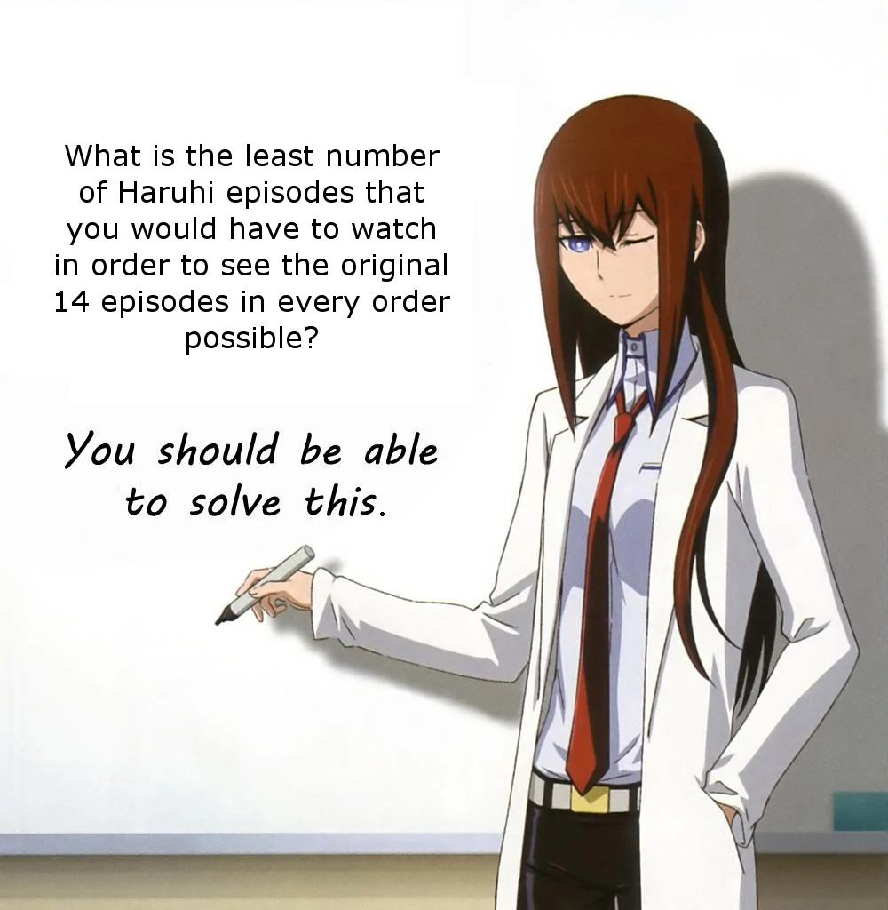

/sci/O problema de Haruhi
Em 2011, um usuário anônimo do 4chan publicou a seguinte imagem:
Qual o menor número de episódios de Haruhi que você teria de assistir para que todos os 14 episódios originais sejam vistos em todas as ordens possíveis?
Por conta da obra Suzumiya Haruhi no Yūutsu ("A Melancolia de Haruhi Suzumiya") ter sido exibida fora de ordem cronológica acaba por se tornar o exemplo perfeito para o teorema.
O enunciado pode parecer confuso, mas vamos entender com um simples exemplo. Supondo que queremos assistir uma série de tv com n=3 episódios. As possíveis ordens para se assistir são seis:
1, 2, 3
1, 3, 2
2, 3, 1
2, 1, 3
3, 1, 2
3, 2, 1
Uma forma errônea para assistir os episódios em todas as ordens possíveis seria colocar todas as sequências uma ao lado da outra e assisti-las na seguinte ordem:
1, 2, 3; 1, 3, 2; 2, 3, 1; 2, 1, 3; 3, 1, 2; 3, 2, 1;
Porém nessa ordem teríamos de assistir a 18 episódios em sequência com o risco de termos de assistir o mesmo episódio duas vezes seguidas. Mas é possível resolver esse problema assistindo um número mínimo de episódios utilizando esta seguinte sequência:
1, 2, 3, 1, 2, 1, 3, 2, 1
Todas as permutações estão contidas nessa sequência, basta comparar cada uma das seis permutações com a sequência final. Veja:
1, 2, 3, 1, 2, 1, 3, 2, 1
1, 2, 3, 1, 2, 1, 3, 2, 1
1, 2, 3, 1, 2, 1, 3, 2, 1
1, 2, 3, 1, 2, 1, 3, 2, 1
1, 2, 3, 1, 2, 1, 3, 2, 1
1, 2, 3, 1, 2, 1, 3, 2, 1
Assim, ao invés de assistir 18 episódios, precisamos assistir apenas 9. Com esse exemplo dá pra se ter uma ideia do que é a superpermutação.
O 4chan entra na história depois de um usuário postar a imagem do problema, assim iniciando a discussão. Ao final, foi demonstrado que a menor sequência que satisfaz a propriedade descrita pela questão da imagem deve ter, no mínimo, comprimento n!+(n-1)!+(n-2)!+n-3 (para n ≥ 2, n sendo o número de episódios).
No caso do anime, A Melancolia de Haruhi Suzumiya, seriam necessários assistir no mínimo 93.884.313.611 (93 bilhões, 884 millhões, 313 mil e 611) episódios para que todas as ordens possíveis fossem assistidas. Aproximadamente 4,3 milhões de anos. :)
A prova dos cálculos está aqui.
▲